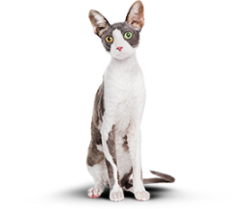

{% set pageId = 0 %}
{% set permalink = pages[pageId].path %}
{% extends "./templates/layout.twig" %}

{% block page__main %}

<main class="page__main">
<h1 class="page__hidden">«Кэт энерджи» — интернет-магазин, который поможет подобрать и заказать питание для вашего кота.</h1>
  <section class="page__banner banner">
    <div class="banner__container page__centerer">
      <div class="banner__content">
        <h2 class="banner__title section-title">Функциональное питание для&nbsp;котов</h2>
        <p class="banner__text">Занялся собой? Займись котом!</p>
      </div>
      <div class="banner__image">
        
      </div>
      <a class="banner__link button button--size_wide button--size_big" href="#">Подобрать программу</a>
    </div>
  </section>
  <section class="page__modules modules">
    <div class="modules__container page__centerer">
      <h2 class="page__hidden">Виды программ</h2>
      <div class="modules__item module-card">
        <div class="module-card__content">
          <h3 class="module-card__title">Похудение</h3>
          <p class="module-card__text">Ваш кот весит больше собаки и почти утратил способность лазить по деревьям? Пора на диету! Cat Energy Slim поможет вашему питомцу сбросить лишний вес.</p>
        </div>
        <a class="module-card__link" href="#">Каталог Slim</a>
      </div>
      <div class="modules__item module-card">
        <div class="module-card__content">
          <h3 class="module-card__title">Набор массы</h3>
          <p class="module-card__text">Заработать авторитет среди дворовых котов и даже собак? Серия Cat Energy Pro поможет вашему коту нарастить необходимые мышцы!</p>
        </div>
        <a class="module-card__link" href="#">Каталог Pro</a>
      </div>
    </div>
  </section>
  <section class="features">
    <div class="features__container page__centerer">
      <h2 class="features__title section-title">Как это работает</h2>
      <ol class="features__list">
        <li class="features__item features__item--icon_leaf">
          <p class="features__text">Функциональное питание содержит только полезные питательные вещества.</p>
        </li>
        <li class="features__item features__item--icon_drink">
          <p class="features__text">Выпускается в виде порошка, который нужно лишь залить кипятком и готово.</p>
        </li>
        <li class="features__item features__item--icon_food">
          <p class="features__text">Замените один-два приема обычной еды на наше функциональное питание.</p>
        </li>
        <li class="features__item features__item--icon_weight">
          <p class="features__text">Уже через месяц наслаждайтесь изменениями к лучшему вашего питомца!</p>
        </li>
      </ol>
    </div>
  </section>
  <section class="result">
    <div class="result__container page__centerer">
      <div class="result__content">
        <h2 class="result__title section-title">Живой пример</h2>
        <div class="result__text">
          <p>Борис сбросил 5&nbsp;кг за&nbsp;2&nbsp;месяца, просто заменив свой обычный корм на&nbsp;Cat Energy Slim. Отличный результат без изнуряющих тренировок! При этом он&nbsp;не&nbsp;менял своих привычек и&nbsp;по-прежнему спит по&nbsp;16 часов в&nbsp;ень.</p>
        </div>
        <dl class="result__list">
          <div class="result__item result-metric result-metric--bordered">
            <dt class="result-metric__name result-metric__name--bordered">Снижение веса</dt>
            <dd class="result-metric__count result-metric__count--bordered">5 кг</dd>
          </div>
          <div class="result__item result-metric result-metric--bordered">
            <dt class="result-metric__name result-metric__name--bordered">Затрачено времени</dt>
            <dd class="result-metric__count result-metric__count--bordered">60 дней</dd>
          </div>
          <div class="result__item result__item--texted result-metric result-metric--texted">
            <dt class="result-metric__name result-metric__name--texted">Затраты на питание</dt>
            <dd class="result-metric__count result-metric__count--texted">&nbsp;15&nbsp;000&nbsp;руб.</dd>
          </div>
        </dl>
      </div>
      <div class="result__compare compare">
        <figure class="compare__images">
          <figcaption class="page__hidden">Сравнение внешнего вида кота до и после похудения</figcaption>
          <div class="compare__image-container compare__image-container--before">
            <div class="compare__image compare__image--before">
              
            </div>
          </div>
          <div class="compare__image-container compare__image-container--after">
            <div class="compare__image compare__image--after">
              
            </div>
          </div>
        </figure>
        <div class="compare__control compare-toggler" hidden>
          <div class="compare-toggler__title compare-toggler__title--before">Было</div>
          <div class="compare-toggler__control">
            <button class="compare-toggler__slider" style="left: 50%">
              <span class="page__hidden">Сравнить</span>
            </button>
            <button class="compare-toggler__button compare-toggler__button--left" type="button">
              <span class="page__hidden">Сравнить</span>
            </button>
          </div>
          <div class="compare-toggler__title compare-toggler__title--after">Стало</div>
        </div>
      </div>
    </div>
  </section>

  {% include "./templates/contact.twig" %}

</main>

{% endblock %}
